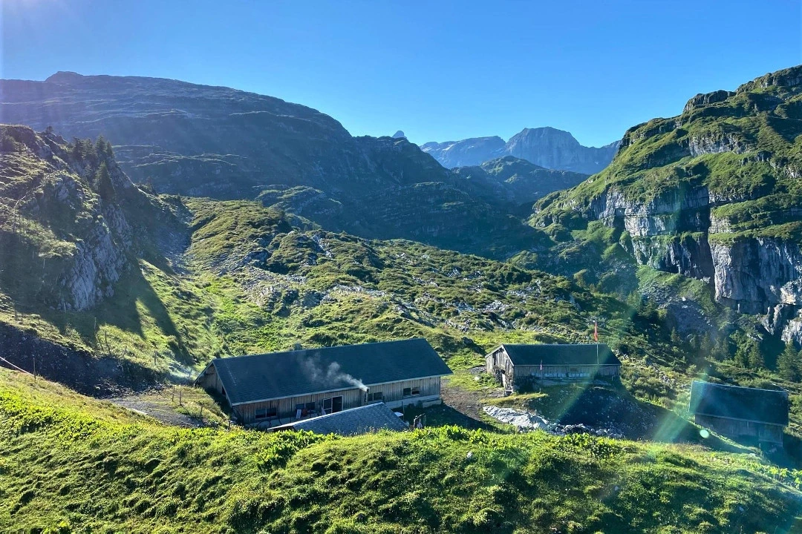
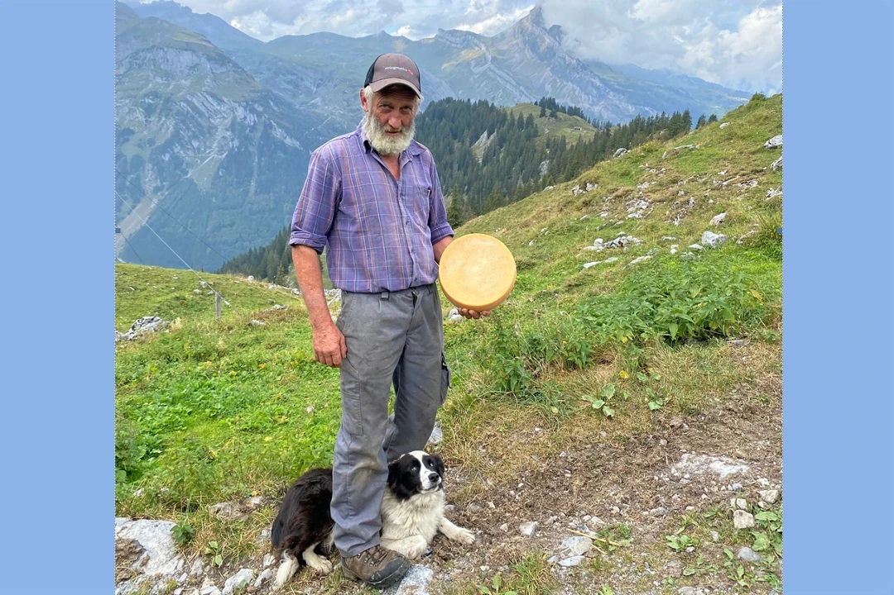
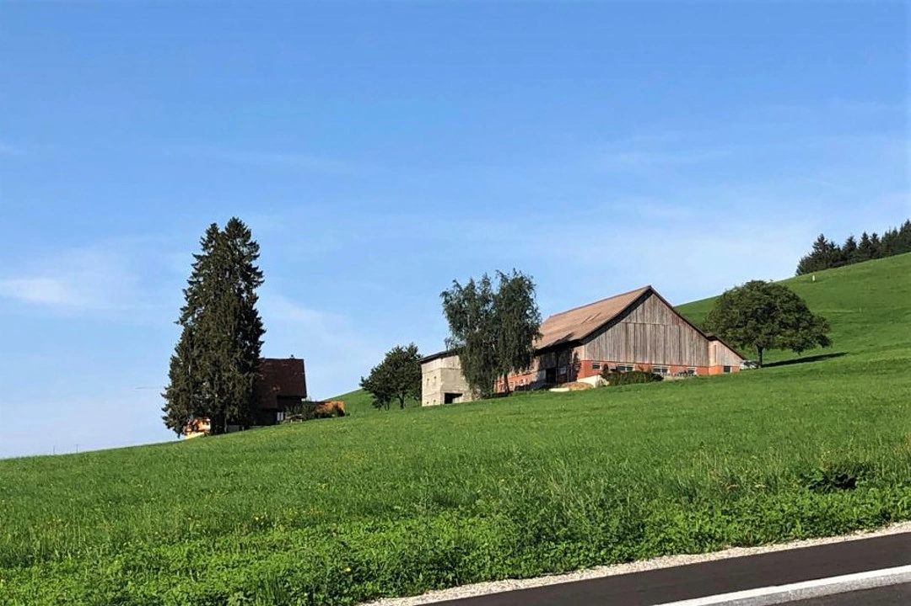
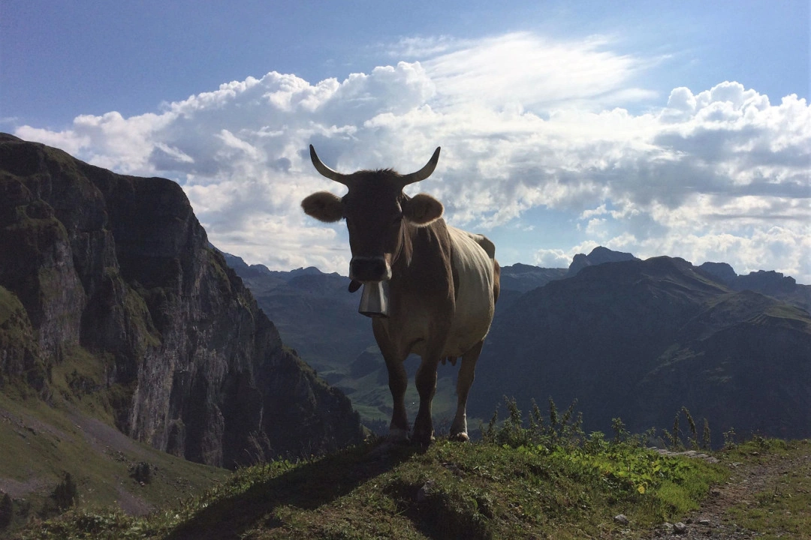
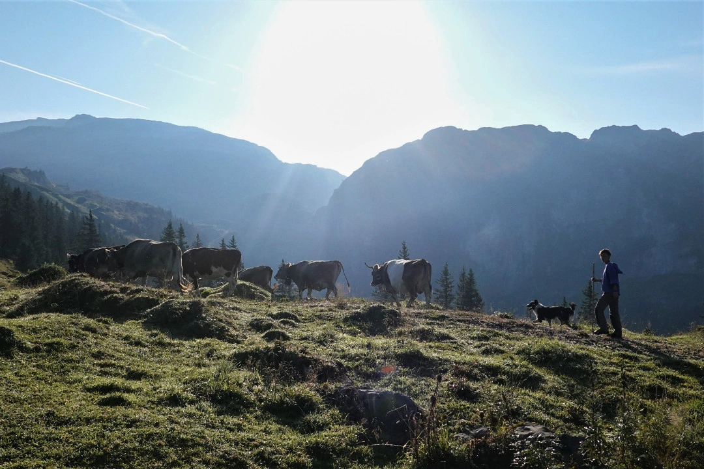

Feine Alpchäs vom Geitenberg
Vom Alpsummer is Hoflädeli: Entdeck de Chäs vo Josef Fässler – uf de Alp im Bisisthal und dahei in Feusisberg.
Üses Agebot entdeckeKroneggstrasse 2 · 8835 Feusisberg

Alpchäs im Hoflade: Oktober bis Ändi Mai

Es Stück Alpsummer
Gras, Alpchrüüter und d Milch vo de Chüeh: Uf de Alp Geitenberg entstaht üse Chäs.
Josef Fässler · Alp Geitenberg
Das gits bi üs uf em Hof

Raclette & Chrüüterchäs
Au Raclettechäs und Variante mit Schnittlauch, Chnobli oder Chümmel ghöred zum Agebot.
De Bsuech plane
Mit de Saison
Je nach Saison hets au Baumnusschärne, Lindeblüete und eigene Moschthonig.
De Bsuech plane
Summer uf de Alp
Im Summer isch Josef uf de Alp Geitenberg im Bisisthal. Lueg i üsi Alpwelt ine.
D Alp entdeckeObe uf de Alp Geitenberg
Im Summer wird uf de Alp chäset. Im Herbscht gönd d Laib mit de Seilbahn is Tal.
Vo Schwarzenbach im Bisisthal erreichsch d Alp in öppe ere Stund z Fuess.
D Alp und d Aareis aluege